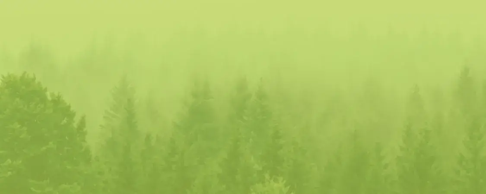
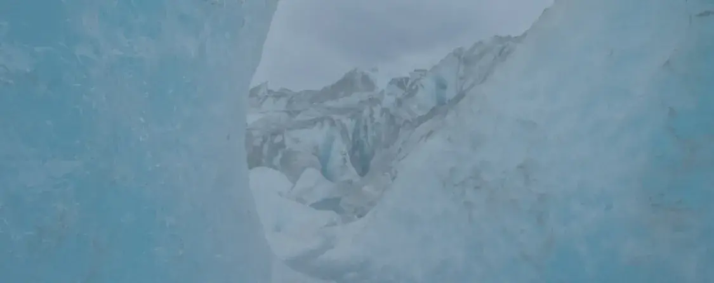
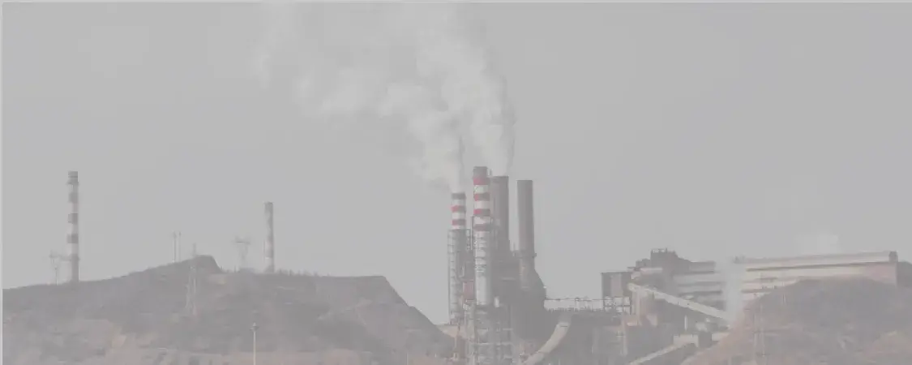

Autre-monde : Une étrange Grande Tempête ravage le monde. Les enfants seuls rescapés découvrent et doivent survivre à cet Autre-Monde…
En savoir plus...

Et si l’Homme allait être responsable de la perte de sa planète ? Que doit-il faire pour la sauver du réchauffement climatique ? Et surtout quels en seront les conséquences ? A travers, Autre-monde de Maxime Chattam, le film Le jour d’après, l’humain découvre la gravité de l’état de sa planète.
Autre-monde : Une étrange Grande Tempête ravage le monde. Les enfants seuls rescapés découvrent et doivent survivre à cet Autre-Monde…
En savoir plus...Le jour d'après : Un climatologue se retrouve à devoir sauver l’Amérique des conséquences du réchauffement climatique. Mais aussi son fils…
En savoir plus... La terre en danger : Notre planète est réellement en danger. Qu’est-ce réellement que ce phénomène qui la détruit chaque jour ? Comment la sauver ?
En savoir plus... 